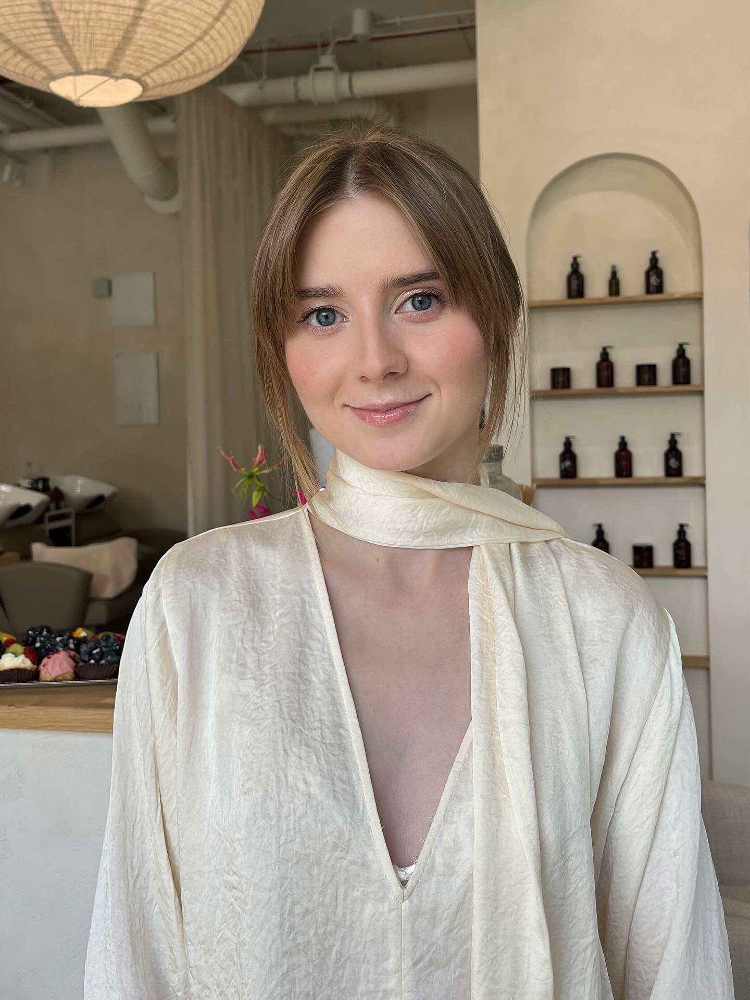

BridalBridal MakeupMakijaż ślubnyСвадебный макияж
Aleksandra
Soft romantic glam with a flawless satin base — she glowed from ceremony to midnight dance.Miękki romantyczny glam z idealną satynową bazą — promieniała od ceremonii do ostatniego tańca.Мягкий романтичный гламур с атласной базой — светилась от церемонии до последнего танца.